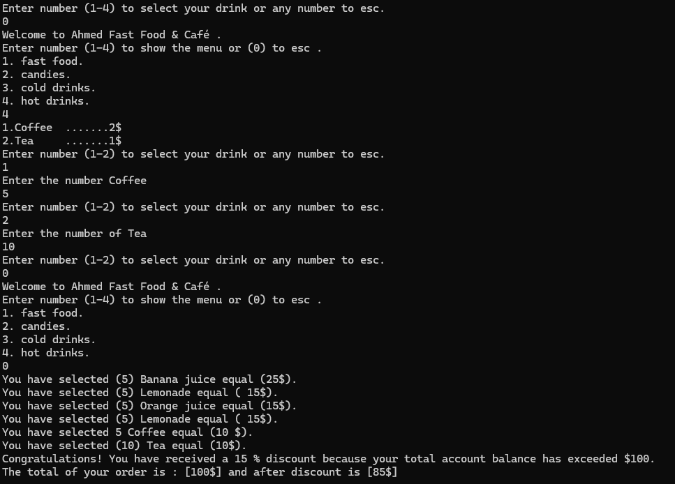
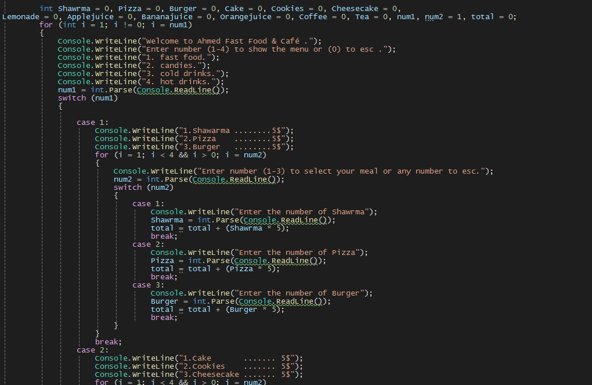

موقع إدارة الطلبات


📌 المهارات المستخدمة في المشروع الأول - تطبيق قائمة الطعام
أساسيات البرمجة في C#
- تم استخدام جميع أنواع المتغيرات مثل int، string، double لتخزين بيانات مختلفة كقائمة الطعام والأسعار.
- تم تعريف المصفوفات والقوائم لتخزين الأصناف المتاحة والتنقل بينها بسهولة.
الجمل الشرطية بأنواعها (if و switch)
- استخدمت جمل if-else للتحقق من إدخال المستخدم ومنع الأخطاء أثناء اختيار الأصناف.
- استخدمت switch-case لتحديد الأصناف بناءً على اختيار المستخدم في القائمة الرئيسية، مما يجعل الكود أكثر تنظيمًا
الحلقات التكرارية (for و while)
- استخدمت حلقات for لتكرار عرض قائمة الطعام عند تنفيذ عمليات مثل التنقل بين الخيارات وإعادة الطلب.
- استخدمت while لضمان استمرار البرنامج حتى يختار المستخدم الخروج منه، مما يوفر تجربة أكثر تفاعلية.
🔗 رابط المشروع على GitHub